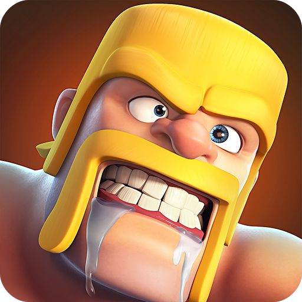
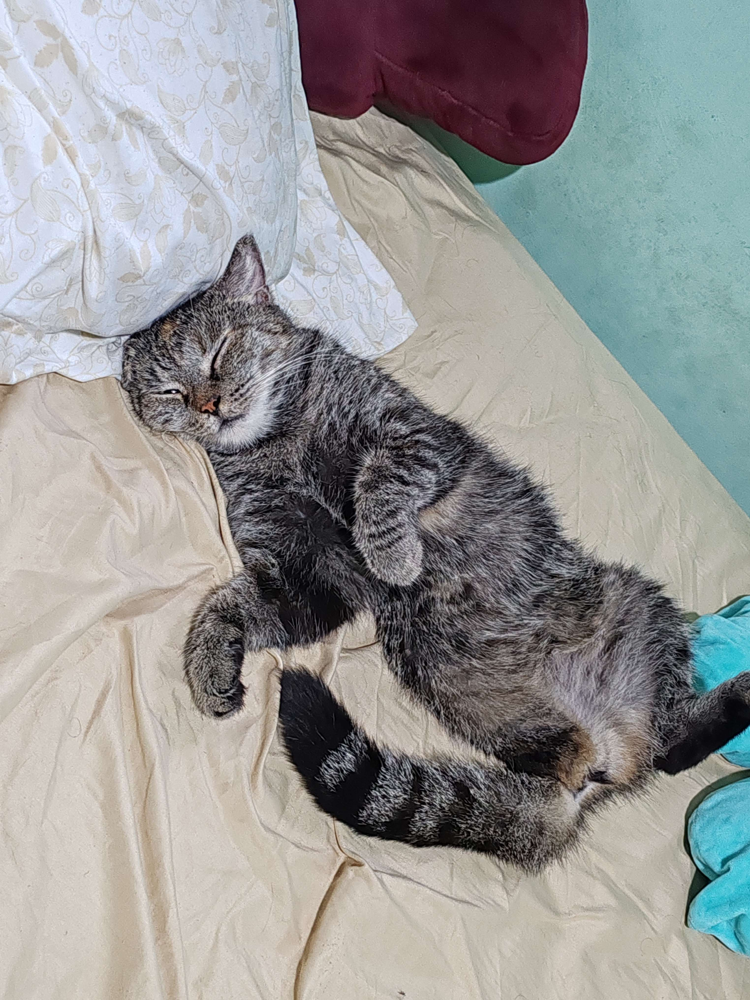

Adrian Chungz
Edad: 23 años
Cédula: 8-992-898
Soy estudiante de la Universidad Tecnologica de Panamá, cursando la carrera de Desarrollo y Gestion de Software. Me apasiona la programación y el desarrollo de software.
Bryan Miranda
Edad: 21 años
Cédula: 8-1014-2476
Soy estudiante de la Universidad Tecnologica de Panamá, cursando la carrera de Desarrollo y Gestion de Software. Me gusta el fubol y jugar playstation.

Monster Hunter
Descripción: Juego de caza y combate
Monster Hunter es un juego de caza y combate donde los jugadores controlan a un cazador que enfrenta a monstruos en entornos diversos.

Clash of Clans
Descripción: Juego de casitas y estrategia
Clash of Clans es un juego de estrategia y se puede decir que de accion. Aqui puedes atacar aldeas enemigas para poder robar recursos y poder mejorar tu propia aldea Me gusto desde el primer momento en que lo descargue y desde entonces lo sigo jugando.

Adrian Valenzuela
Edad: 21 años
Cédula: 8-1016-2321
Soy estudiante de la Universidad Tecnologica de Panamá, cursando la carrera de Desarrollo y Gestion de Software. Me gusta leer, jugar videojuegos y los gatos.
Terraria
Descripción: Juego de aventuras y construcción
Terraria es un juego de aventuras y construcción donde puedes explorar mundos generados proceduralmente, construir estructuras, y enfrentarte a enemigos. Me gusta por su libertad creativa y la cantidad de contenido que ofrece.